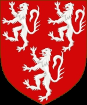

Antavla
751119 Countess Euphemia of Ross
Grevinna. Blev ca 49 år.

Far:
William III of Ross, 4th Earl of Ross (- 1372)
Mor:
Mary MacDonald
Född:
omkring 1345 Cromarty, Scotland.
[1]
Död:
1394-07-24 Pitmiddle, Scotland.
[1]
Barn med
751118 Lord Walter Leslie of Leslie (1310? - 1382)
Barn:
Mariota Leslie of Ross (1365? - 1435)
Personhistoria
Årtal
Ålder
Händelse
1345?
Födelse omkring 1345 Cromarty, Scotland
[1]
1365?
Dottern
375559 Countesse Mariota Leslie of Ross
föds omkring 1365 Dundonald Castle, Ayrshire, Scotland
[1]
1372
Fadern
1502238 Earl William III of Ross, 4th Earl of Ross
dör 1372 Scotland
[2]
1382
Partnern
751118 Lord Walter Leslie of Leslie
dör 1382-02-27 Pearth, Pearthshire, Scotland
[1]
1394
Död 1394-07-24 Pitmiddle, Scotland
[1]
Källor
[1]
Wikitree
[2]
comrade28